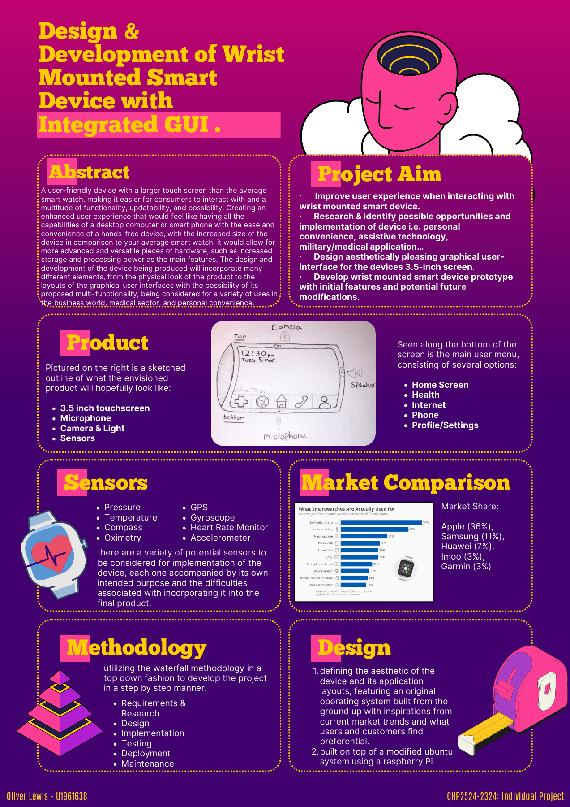

Project overview
A wearable Raspberry Pi and Pygame project that grew from my university prototype. The case, interface and touchscreen controls are still being developed together.

A developing wearable Raspberry Pi and Pygame application inspired by Fallout.
The Pygame prototype, running at the Pi screen’s original 480 × 320 resolution. Tap or click the screen to explore STAT, ITEMS and DATA.
Original Raspberry Pi display · 480 × 320
Character, inventory, perks, notes and quests save in this browser. Map data © OpenStreetMap contributors; LOCAL MAP is the prototype’s fictional test map. Radio includes four 30-second previews. Physical Pi sensor readings are unavailable here.
A wearable Raspberry Pi and Pygame project that grew from my university prototype. The case, interface and touchscreen controls are still being developed together.
Like most of the projects featured in my portfolio, my Pi-Boy is still a work in progress. I intend to continue developing it as I improve the software, finish assembling the casing and find new ways to make the device more useful, wearable and faithful to the Pip-Boy seen in the Fallout games.
The project combines several different areas of work: application development, Python programming, interface design, Raspberry Pi configuration, touchscreen controls, 3D printing and physical assembly. However, the idea behind it did not begin as a direct attempt to recreate a Pip-Boy.
It originally developed from my final-year university project.

For my final-year project, I had to propose and develop a working application alongside a physical prototype. My idea was inspired by the Pip-Boy but imagined as a more realistic, everyday wrist-mounted computer—something closer in purpose to an Apple Watch, but with more emphasis on health monitoring, personal information and portable storage.
I theorised that the device could read and record biometric information from the person wearing it, including their heart rate and other health-related data. It could potentially help the user monitor long-term health conditions, retain important personal or medical information and act as a portable storage device that remained physically attached to the wearer.
The Pip-Boy was a useful source of inspiration because it already presented information about the player’s health, physical condition, inventory and surroundings through a device worn on the character’s arm. My university concept attempted to take those fictional ideas and consider how they might be adapted into something useful in the real world.
The finished university project allowed me to explore interface design, applications, physical prototyping and the relationship between software and the device running it. It also connected with the wider work I was beginning to create in web design, digital graphics and interactive applications—the same areas that eventually developed into many of the projects now displayed throughout my portfolio.

The surviving proposal and poster show the scope I initially imagined: a Raspberry Pi 4, a 3.5-inch touchscreen, speaker and a wrist-mounted enclosure, with health, internet and profile screens in the planned interface. Camera, microphone, GPS and sensors were possible future extensions in the proposal—not hardware I had already installed. The early research also considered accessibility, data accuracy and privacy because a device carrying health information would need more than a convincing shell.
After graduating, however, the prototype spent the next couple of years sitting in a box and doing very little.
The original course had ended, the work had been submitted and there was no immediate reason to continue developing it. The idea had not disappeared, but it had effectively become another abandoned prototype.
Eventually, I decided to return to it from a different direction.
Instead of making a general wrist-mounted health device inspired by a Pip-Boy, I thought I might as well attempt to build an actual working Pip-Boy.
The renewed project became the Pi-Boy: a Raspberry Pi-powered Pip-Boy containing a working touchscreen application based on the interfaces from Fallout.
I already had the original university concept to build from, but this version required a more focused identity. It was no longer only a theoretical wearable device. I wanted it to look recognisably like something from the games while also functioning as a real portable computer.
The basic hardware consists of a Raspberry Pi board, a small touchscreen and a speaker. These components needed to fit inside a wearable enclosure while leaving access to the Pi’s ports and enough room for wiring, controls and possible future additions.
The project became much more achievable when local artist and family friend MorganSpear3D offered to help fabricate the physical casing.
Morgan was able to develop and 3D-print a model using the dimensions of the Raspberry Pi board and touchscreen. The design included space for the speaker, access to the Pi’s ports and room for future additions such as working dials, buttons and lights. These details mean the physical model can continue to develop rather than permanently trapping the project in its first configuration.
Having a real enclosure designed around the hardware gave me a much stronger reason to turn the software from a simple experiment into a complete working application.
The main body of the Pi-Boy is a large green wrist-mounted chassis that holds the touchscreen, Raspberry Pi and other internal hardware.
The lower gauntlet was printed in two sections so that it can open and close around the wearer’s wrist. Spaces were included for small but strong magnets, allowing the two halves to clip together rather than permanently sealing the device or relying entirely on glue.
The upper section contains the main electronics compartment. A cavity inside the housing holds the Raspberry Pi board and associated components. Multiple openings provide access to the Pi’s ports, while four screw holes align with the mounting points on the board so that it can be mechanically secured instead of moving around inside the casing.
A separate, more detailed section surrounds the screen and includes the Geiger-counter housing positioned beside it. This section can be screwed into place, partially covering the unfinished edges of the display and helping the touchscreen feel integrated into the casing rather than simply placed on top of it.
The printed collection also includes:
Producing the casing as separate components makes it possible to assemble, test and modify the device without having to destroy the enclosure whenever something changes. It also gives me the option to replace individual parts or redesign the controls later.
The touchscreen bezel is one of the first pieces to fit. It sits over the display from the front, surrounding the silver edge of the LCD and covering some of the unfinished gap between the screen and the green body. Before anything is glued or permanently fastened, the bezel, display and screw holes need to be tested together to make sure the screen remains accessible and the touch input is not obstructed.
The physical assembly is still in progress. Some components can be secured with screws, while the remaining supports, external controls and cosmetic parts need to be test-fitted before a final method of attachment is chosen.
The Pi-Boy software did not begin in Python.
My first version was created as an HTML website. Building the interface in HTML, CSS and JavaScript allowed me to quickly experiment with the familiar green-and-black Pip-Boy aesthetic, create different sections and test how information could be arranged on a small screen.
This was useful for developing the appearance, but a webpage was not necessarily the best final format for a dedicated Raspberry Pi touchscreen. I wanted the Pi-Boy to feel like its own application rather than a website that happened to be running in a browser.
A browser also introduced elements that did not belong inside the device, including window borders, navigation controls, scaling differences and other distractions. Even when displayed in full-screen mode, it still behaved like a webpage underneath.
I therefore decided to rebuild the application using Python and Pygame.

Converting the project from HTML into Pygame was not simply a matter of copying the original files into another format. I had to develop a much better understanding of Python and rebuild the interface as a proper application.
Pygame gave me direct control over the screen, layout, images, fonts, buttons, touch regions and navigation. It also made it easier to run the program full-screen as a dedicated Pi-Boy interface.
The application is designed specifically around the small touchscreen resolution, using large touchable areas while still trying to preserve the narrow text, glowing green lines and information-heavy appearance of the game.
As the project grew, I divided the program into separate modules rather than trying to keep everything inside one enormous Python file. The main application controls navigation between the primary sections, while other files handle pages such as the character status, SPECIAL attributes, skills, perks, inventory, maps, notes and radio.
The user’s information is saved into separate data files so that closing the application does not reset the character. This allows the Pi-Boy to behave more like a persistent personal device rather than a visual demonstration that returns to its defaults every time it launches.
The current software is a version 0.4 development build, and it continues to be revised as individual sections become more complete.

The main interface is divided into the familiar STAT, ITEMS and DATA sections.
I used visual assets and reference material gathered from the Fallout Fandom Wiki and the games to help recreate the appearance of the Pip-Boy. These include Vault Boy illustrations, perk images, SPECIAL artwork and item graphics.
The purpose was not just to place green text over a black background. I wanted the different pages to behave in recognisable ways while remaining usable on a real touchscreen.
The screen includes bright and dim shades of Pip-Boy green, highlighted selections, glowing divider lines, scrollable lists and a persistent navigation system. Character information such as level, hit points, action points and experience can remain visible across the relevant pages.
I also had to account for the limitations of the physical screen. A layout that looks comfortable on a computer monitor can become almost unusable when reduced to a wrist-mounted display. Buttons need to be large enough to press, text must remain legible and scrollbars need to work with a finger rather than only with a precise mouse pointer.
The STAT section contains several pages based on the character systems used throughout Fallout.
The status page provides an overview of the user’s character, including information such as health, level, action points and experience.
The long-term intention is to connect parts of this area back to the original university concept. Instead of displaying only fictional character statistics, a future version could show genuine system information or readings from additional sensors.
The SPECIAL page uses the seven familiar categories:
Each value can be adjusted and stored as part of the user’s character profile. The page uses matching artwork to give each category the same personality it has inside the games.
The skills page contains abilities such as Barter, Energy Weapons, Explosives, Guns, Lockpick, Medicine, Repair, Science, Sneak, Speech and Survival.
The user can edit the values to create their own character build. This means the Pi-Boy does not have to represent an existing save file from the game; it can become a personalised character sheet for the person wearing it.
The perk system allows the user to browse a collection of Fallout perks, view their artwork and add selected perks to their own profile.
Perks can be added and removed, and the owned-perk list is saved between sessions. Scrollbars and touch controls were developed so that the larger library can still be used on the limited display.
The General page connects the fictional interface to the actual Raspberry Pi.
It can show real information about the device, including its host name, operating system, uptime, IP address, processor temperature, memory use, available storage and power status.
There is also an option to exit the Pi-Boy application and return to the Raspberry Pi desktop. This means the device still functions as a small computer rather than locking the user permanently inside the themed interface.
The inventory is divided into familiar categories:
The application contains a catalogue of existing Fallout items with corresponding names and artwork. The user can add items to their personal inventory and remove them again when they are no longer needed.
More importantly, the Pi-Boy is not restricted to items taken from the games.
I developed an on-screen keyboard that allows the user to enter the name of a completely custom object and create it inside their inventory. This means somebody could use the Pi-Boy to keep track of real possessions, equipment, supplies or anything else they wanted to carry as part of their character.
A custom item might not have official game artwork, but it still becomes a saved object within the inventory. This transforms the feature from a static collection of Fallout images into a system that the wearer can actually personalise.
The inventory required its own touchscreen scrolling system because the lists can quickly become longer than the available space. Both the main catalogue and the user’s owned items need to remain navigable without relying on a keyboard and mouse.
The DATA section contains some of the most ambitious features in the project:
One of my aims was to incorporate a real-world map rather than limiting the device to a fictional map of the Mojave or Capital Wasteland.
The mapping section gives the Pi-Boy a practical connection to the wearer’s actual surroundings. It also returns to the original idea of creating a portable device that could provide useful personal information rather than only recreating a game prop.
Displaying a real map inside a small Pygame interface created its own problems involving scale, controls, loading and fitting useful information into the available screen area. It remains an area I can continue to expand with location markers and other data.
The quest system allows the user to create and manage personal objectives in the style of a Fallout quest log.
Rather than showing a fixed list copied from the games, the wearer can add their own tasks and objectives. This could be used for actual projects, appointments, reminders or everyday goals while keeping them inside the role-playing interface.
The Notes page provides another editable area using a touchscreen keyboard.
The user can create a title, enter text, save the note and return to it later. Notes are stored locally so that they remain available after the application has closed.
Developing a usable keyboard on such a small display was a challenge, particularly when allowing enough room for letters, spaces, deletion controls and save buttons. However, it means the Pi-Boy can accept information directly from the touchscreen without always needing an external keyboard.
The radio is one of the features that helps the device feel most like a functioning Pip-Boy.
I added Fallout-style radio music to the Raspberry Pi so that tracks can be selected and played directly through the application and its speaker. This required more than simply displaying station names: the program needed to load audio, play and pause it, move between tracks and continue operating within the rest of the interface.
The radio also presented several technical problems while the software was being reorganised and optimised. Fixing its playback became an individual stage of the version 0.4 development process.
Eventually, I would like to expand the radio with additional stations and collections while keeping the controls simple enough to operate from the wrist.
Getting the application to work on my computer was only part of the project. It also had to run correctly on the Raspberry Pi and its attached touchscreen.
The display created several recurring problems involving resolution, rotation and touch alignment.
The physical orientation required for the enclosure did not always match the Raspberry Pi’s default screen orientation. Rotating the image could cause the touchscreen input to remain mapped in its original direction, meaning the interface appeared correctly but touches were registered in the wrong part of the screen.
A button displayed at one side could respond only when an entirely different area was pressed. Rotating the screen in another way could fix the image but turn the touch coordinates upside down or swap the horizontal and vertical axes.
The small resolution also meant that a program developed in a normal computer window did not automatically scale correctly when transferred to the Pi. Text could become too large, controls could extend beyond the edge of the display and the bottom navigation could be partially hidden.
I had to repeatedly adjust the Raspberry Pi’s display settings, full-screen behaviour, interface dimensions and touchscreen handling until the visible controls and physical touch positions matched.
These problems were frustrating because the application could appear perfectly functional with a mouse on a desktop computer and then become almost unusable when placed on the hardware for which it was actually intended.
However, resolving them helped me understand more about Linux display configuration, Raspberry Pi hardware, coordinate systems and the differences between developing software for a monitor and building an interface for a specific physical device.
The application can still be tested with a mouse and keyboard, but its main controls are designed for touch.
Every page needs clearly defined interactive regions. Tabs, list entries, adjustment buttons, scrollbars and on-screen keyboards must all respond reliably to a finger on a small display.
Some controls went through several versions because they were technically clickable but impractical to use. Narrow scrollbars, closely packed buttons and long lists might be acceptable with a mouse, but not on a wearable screen.
I therefore added larger hit areas, draggable scrollbars, highlighted selections and alternative navigation controls. Keyboard support remains useful during development, but the goal is for the final Pi-Boy to operate independently without needing a separate mouse or keyboard connected to it.

The software and hardware have influenced one another throughout the project.
The dimensions of the screen determine how much information the program can display. The bezel affects how close buttons can be placed to the edges. The position of the speaker and Raspberry Pi ports affects how the casing can be assembled. Future physical buttons or dials may eventually replace some of the on-screen controls.
For now, most interaction happens through the touchscreen. The printed dial, cylindrical housing and smaller control pieces mainly help reproduce the appearance of the in-game device, but the enclosure was designed with enough space for later experimentation.
Possible future additions include connecting the external controls to the Raspberry Pi’s GPIO pins, adding working indicator lights, creating physical navigation buttons and incorporating sensors that return to the biometric ideas behind the original university project.
That would allow the Pi-Boy to move further beyond being a costume prop. It could become a genuinely interactive wearable computer enclosed inside a recognisable piece of Fallout-inspired design.
The Pi-Boy has developed into one of my most varied projects because it has required me to work across both software and physical design.
It began with the skills I already had in HTML, CSS and interface design. Rebuilding it in Pygame required me to learn more about Python, modular programming, local data storage, image handling, audio playback and touchscreen input.
Installing it on the Raspberry Pi introduced Linux configuration, screen rotation, full-screen applications, system information and hardware troubleshooting. The physical casing added measurements, component placement, mounting points, magnets, screws and the practical problem of fitting everything into a wearable form.
The application has also gone through several versions and individual fixes. Pages have been rebuilt, controls have been resized, code has been separated into modules and features such as radio playback, scrolling and custom data entry have each required their own rounds of testing.
Like the university prototype before it, the Pi-Boy has taught me that an idea can work perfectly well as a visual design but behave very differently once it has to operate on real hardware.
The Pi-Boy is now much more than the abandoned prototype that sat in a box after university.
The Raspberry Pi can run a dedicated full-screen Pygame application with touch-controlled STAT, ITEMS and DATA sections. The user can create a character, edit SPECIAL attributes and skills, choose perks, manage an inventory, add custom objects, create quests and notes, view maps, play radio music and monitor information from the Pi itself.
The 3D-printed casing has been produced around the dimensions of the board and screen, with dedicated areas for the speaker, ports, mounting screws, display bezel, magnets and future controls.
However, I do not consider it completely finished.
The physical parts still need further fitting and final assembly. Some of the software pages can be expanded, the controls can continue to improve and there are still opportunities to integrate more real-world information and hardware.
That unfinished quality is not necessarily a weakness. The entire project exists because I returned to an old idea that had already been placed in a box and decided that it could become something more.
What began as a university proposal for a theoretical health and storage device has developed into a working Raspberry Pi application, a custom 3D-printed enclosure and a platform that I can continue modifying as my programming and hardware knowledge grows.
For now, it is a functioning Pi-Boy.
Eventually, I would like it to become the kind of device that originally inspired the idea: part fictional prop, part personal organiser and part genuinely useful wearable computer.